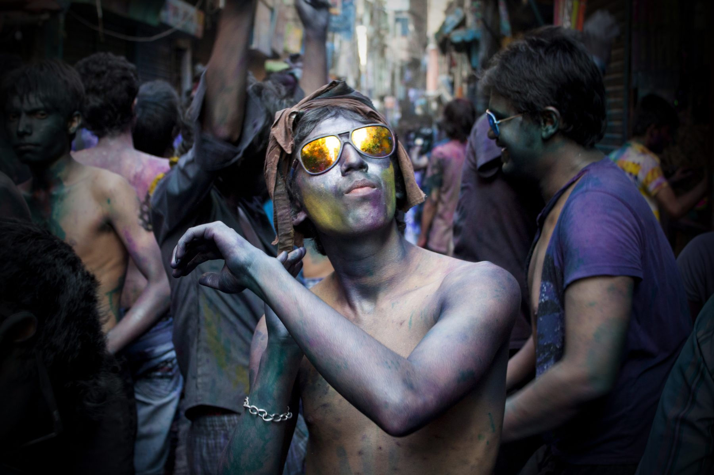
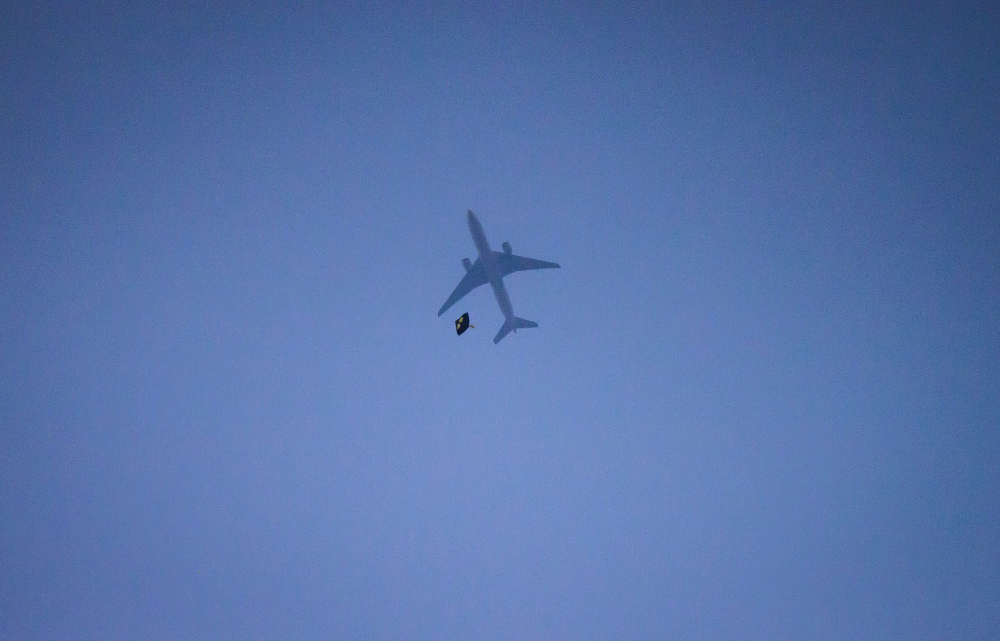
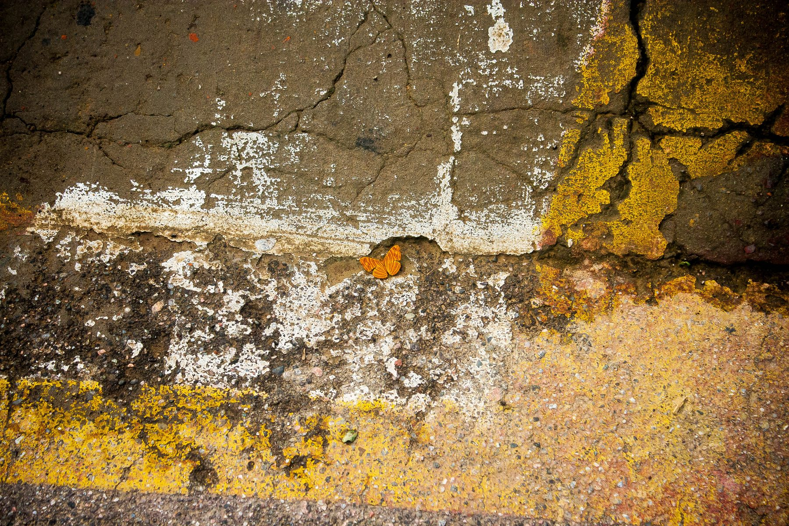
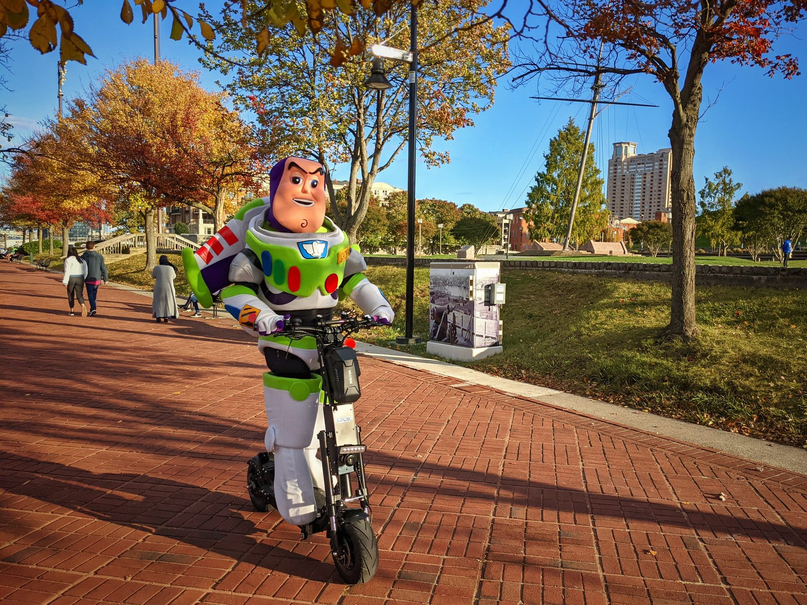
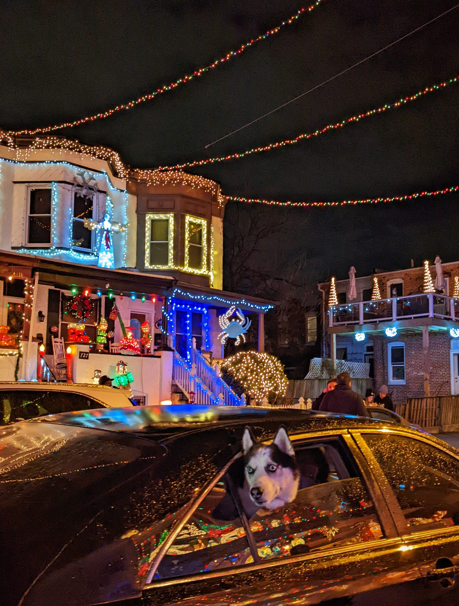
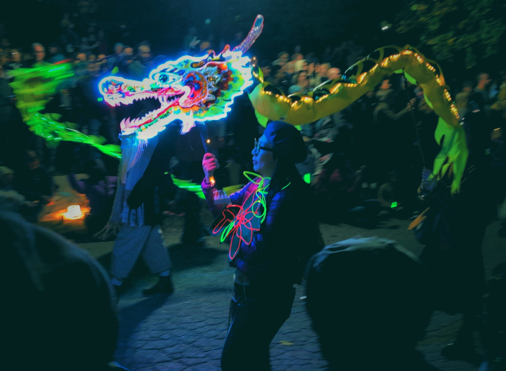

Selected photos
Select any photo to view it larger.






Features
The BUET Photographic Society featured me as a former vice president, with reflections on keeping a creative practice alongside research.
An early frame from Holi in Shakhari Bazar, Old Dhaka, selected for the BUETPS “Featured” series on contemporary photography by BUET students.